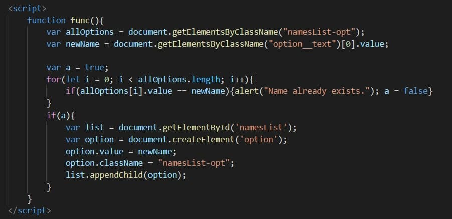

<br>
Тег &lt;script&gt; призначений для опису скриптів, може містити ссилку програми або її текст у певній мові. Скрипти можуть мати доступ до зовнішнього файлу та зв'язуватися з будь-яким HTML-документом.